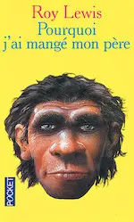
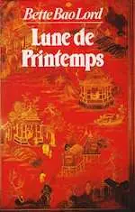
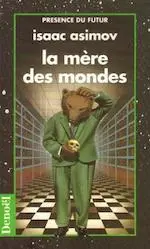
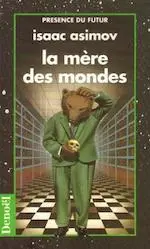

2021
Octobre
-
20 —
 Cyrano de Bergerac d’Edmond Rostand
Cyrano de Bergerac d’Edmond Rostand
-
09 —
 L’Ickabog de J.K. Rowling
L’Ickabog de J.K. Rowling
-
03 —
Métaphysique psychotique et drame

 siva (Philip K. Dick), Roméo et Juliette (William Shakespeare)
siva (Philip K. Dick), Roméo et Juliette (William Shakespeare)
Janvier
2020
Décembre
- 24 —  Pourquoi j’ai mangé mon père de Roy Lewis
- 19 —  Lune de Printemps de Bette Bao Lord
- 06 — Les dents de Chastel
- 01 — Maryline trompe la mort de Diatomée
- 01 — Relecture de mon roman Objectif petit ami
Novembre
- 30 — Extrabêtes de Diatomée
- 28 — Nos Nuits de Diatomée
- 27 — Ailleurs de Diatomée
-
25 —
Relecture des aventures de Megumi

- 16 — Le Silmarillion de J.R.R. Tolkien
- 07 — Armée ou défense civile non-violente
-
05 —
 Mais moi je vous aimais de Gilbert Cesbron
Mais moi je vous aimais de Gilbert Cesbron
-
02 —
 Des friches et des chiffres de Odette Laplaze-Estorgues
Des friches et des chiffres de Odette Laplaze-Estorgues


 
